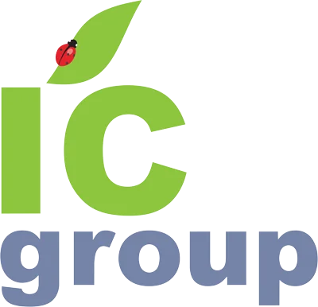

Разбор кейса
Задача клиента, решение, итог в цифре. Например, Expo-2017: 500 клинеров за 3 дня.
Нужно согласие клиента
Задача
IC Group крупнейший клининговый холдинг Казахстана. Но снаружи его знают только по уборке. Контент должен показать масштаб компании и все её направления: клининг, обслуживание зданий, охрану, своё производство и аутстаффинг.

Цель 1
Зритель должен видеть крупную и надёжную компанию, с которой работают банки, нацкомпании и госучреждения.
Цель 2
После роликов должно быть ясно, что IC Group берёт на себя всё здание, а не только уборку.
Предложения
Каждый формат работает на одну из двух целей. Готовые ролики можно посмотреть в разделах.
Направление 1
Руководитель узнаёт себя в мастере. Остальные зрители смотрят ради рукотворной картинки, которую редко видят в ленте. Такой ролик пересылают, и он уходит далеко за пределы аудитории холдинга.
Каждый раз свой креатив и свой формат. «Мастер» в стоп-моушне лишь первый пример.
Поначалу ролик не ощущается как реклама. Зритель смотрит его как мультфильм, короткий фильм или имиджевое кино и только в конце понимает, о какой компании шла речь.
Направление 2
Короткий динамичный ролик в фирменном стиле: масштаб холдинга и все его направления за 40 секунд.
Задача клиента, решение, итог в цифре. Например, Expo-2017: 500 клинеров за 3 дня.
Нужно согласие клиента
Короткие ролики под конкретного клиента или отрасль, которые Ларион показывает на встрече. Помогают закрывать сделки: за пару минут видно масштаб и всё, что холдинг возьмёт на себя.
Для переговоров
Заставки, ролики на экраны и вступления к выступлениям на форумах, выставках и событиях холдинга.
Для ивентов
Направление 3
Ироничные ролики о жизни города и офиса без работы холдинга. Никакой околонаучной информации, только смешные и узнаваемые ситуации, которые хочется переслать коллегам. В формат можно ввести постоянных персонажей, чтобы зритель узнавал их от ролика к ролику.
День за днём Алматы зарастает мусором: офисы, базар, школа, метро. В финале божья коровка садится на плечо уборщицы.
Пилот готов
Комедия по минутам: паника в общем чате, гонец в магазин. Финал: рулоны своего производства.
Производство
Гора посуды на кухне растёт, в общем чате собрание, кто-то пьёт кофе из вазы. Знакомо каждому офису.
Клининг офиса
Офис делится на тех, кто открывает окно, и тех, кто закрывает. Бухгалтерия переезжает к холодильнику. Финал: инженер холдинга.
Обслуживание зданий
Направление 4
Путь основателя от риелтора до холдинга с тысячами сотрудников.
Готово
Каждое направление появилось как ответ на задачу основного бизнеса. Так зритель понимает, откуда у холдинга 10 направлений.
Многоотраслевой холдинг
С чего компания начиналась в 2007 году и как выросла до 5 000+ человек.
Масштаб
Реальный человек, который начинал с уборки и стал партнёром компании.
Люди холдинга
Истории о пути основателя и росте компании подходят для показа в бизнес-клубе, где состоит Ларион. Резиденты сами предприниматели, им близок такой путь.
Направление 5
Процесс, от которого трудно оторваться: грязь уходит полосой за полосой, слышен живой звук воды. Такие ролики пересматривают, и Instagram показывает их новым людям.
Камера на очках или шлеме. Вид вниз с высоты, спуск по фасаду, мокрая полоса по стеклу, за стеклом офис, который ничего не замечает.
Высотные работы
Тёмный ковёр, одна чистая полоса, потом вторая. Из-под грязи проступает яркий узор. Только звук воды и щётки.
Ковер.кз
Направление 6
Сотрудники и руководители холдинга сами рассказывают о работе: аудитор, инженер, руководитель объекта, основатель. Это направление нужно, чтобы аккаунту доверяли: за красивыми роликами видны настоящие люди и настоящая экспертиза.
Чтобы формат вовлекал, к живой съёмке добавляем приёмы генеративного ИИ: Higgsfield и другие нейросети. Например, эксперт рассказывает о работе, а вокруг него оживает здание или появляются забавные визуальные шутки.
Живые люди дают доверие, нейросетевые вставки удерживают внимание. Экспертный ролик смотрится не как скучное интервью.
Направление 7
Ролики о событиях, которые проводит холдинг, и о тех, где он участвует: форумы, выставки, отраслевые встречи. Формат и подачу обсуждаем предметно под каждое конкретное событие.
Если компания основана в 2007 году, в 2027 году у неё юбилей. Это повод для большого события и серии роликов на весь год.
Холдинг выглядит как участник и организатор отраслевой жизни, а не только как подрядчик.
Отдельный канал
Руководители компаний, закупщики и международные клиенты ищут подрядчиков в LinkedIn. Страницы холдинга там пока нет.
Все направления, ключевые клиенты, вакансии. Адрес linkedin.com/company/ic-group уже занят другой компанией, нужен свой.
Кейсы, направления холдинга, презентация компании в виде листаемых PDF. Их сохраняют и пересылают коллегам.
Посты Лариона Ляна и топ-менеджеров о рынке и решениях. В LinkedIn люди читают людей охотнее, чем бренды.
Для запуска
Эти материалы и решения нужны, чтобы делать контент по всем направлениям.
Охрана, обслуживание зданий, производство, аутстаффинг: что делают, для кого, чем гордятся. Тогда можно делать контент точечно по каждому.
Какие объекты и клиентов можно снимать и называть, что снимать нельзя.
Фото и видео больших проектов, первых лет компании и мероприятий.
Сотрудники, которые хотят сниматься: альпинисты, аудиторы, супервайзеры, инженеры.
Готов ли Ларион Лян к съёмкам, совместным публикациям и постам в LinkedIn.